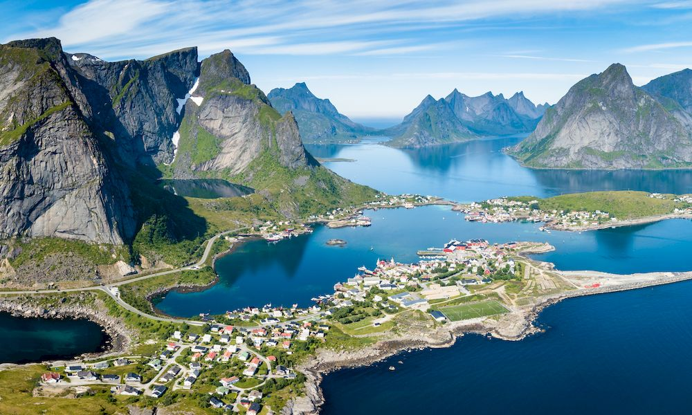
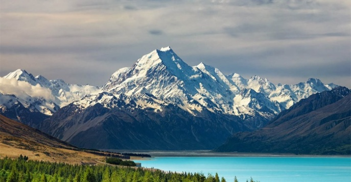

О мечте
Моя мечта — путешествовать по миру, открывать новые культуры и места. Я хочу посетить такие страны, как Япония, Норвегия и Новая Зеландия. Эти страны привлекают меня своими пейзажами, традициями и уникальной атмосферой.
Визуализация мечты
 Что поможет мне достичь мечты
- Изучение иностранных языков
- Планирование бюджета
- Исследование культур и традиций
Полезные ресурсы
Для вдохновения и планирования путешествий, посетите Lonely Planet.